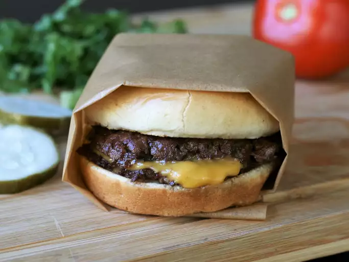

Click here to go back to the home page!
This smash burger recipe makes super juicy burgers with crispy edges. Don't use meat that is leaner than 80/20 for best results, and make sure the meat is very cold.
I prefer to cook these outdoors to avoid smoking up the kitchen. These grill up very fast because of the high heat, so make sure you have everything ready to go!